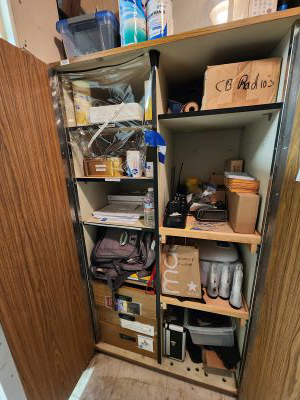

Once you reach the parking area, lead the carvan of visitors' cars to the Highway 1 gate to unlock it while D2 stays in the parking area.
Remember to take the state radio with you.
After visitors have left, pick up D2 from parking area and drive up to the VC.
Assist with VC docent if needed (taking down flags or volunteering sign, lock/arm buildings, etc).
Return tour materials to Docent cabinet*.
Close out and set alarm of VC.

report
Report anything unusual to Volunteer Chair, Vice Chair, or State Park Interpretor, Sara Howlett.
Next Page